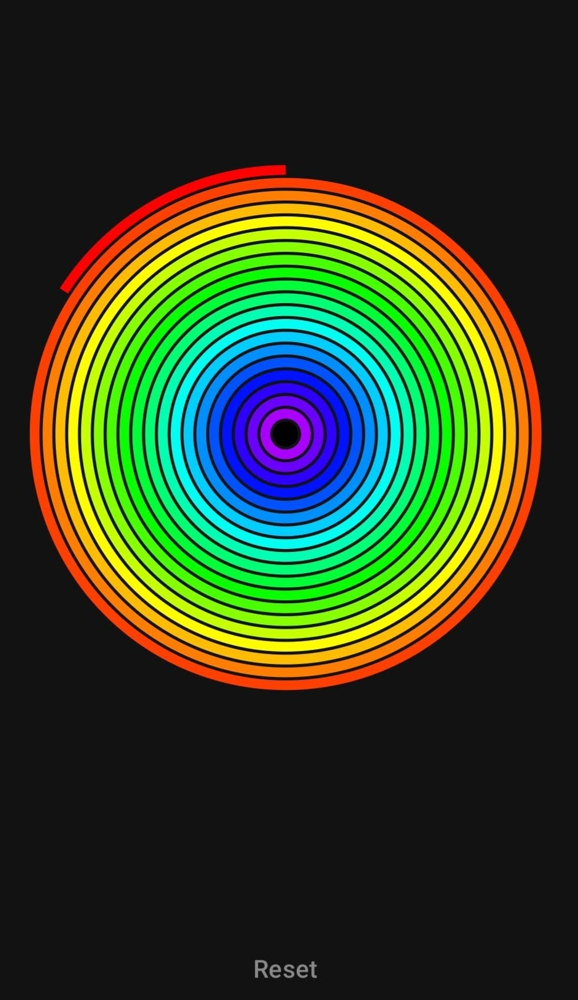
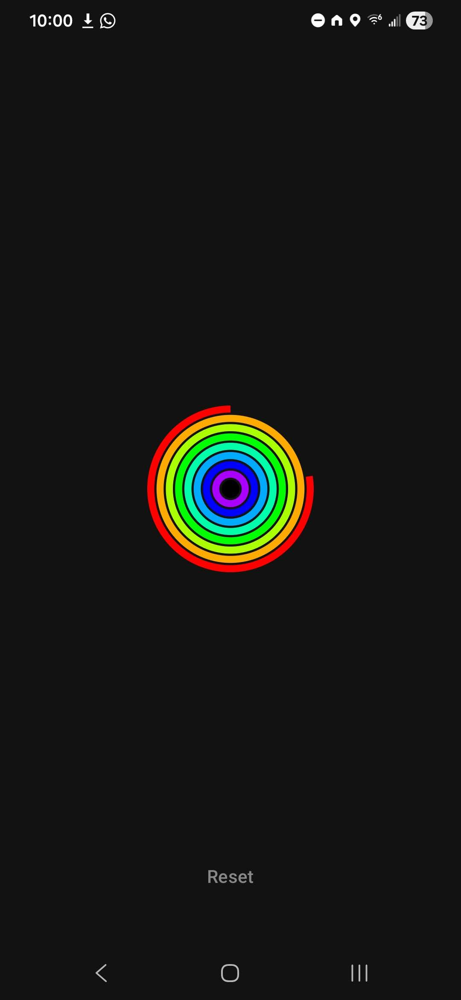

Visual Countdown Timer for Android


As a parent of a toddler, I've always struggled with helping my little one understand the concept of time. Traditional timers with just numbers or ticking sounds don't quite cut it for a young child who's still developing their sense of time. That's where the Rainbow Timer comes in—a visual countdown timer app for Android that displays time using animated concentric rainbow rings. Each ring depletes progressively as time passes, providing an intuitive and visually engaging way to track remaining time. It's perfect for helping my son transition between activities, like knowing when playtime is up or when it's time for bedtime.
I initially created this app for personal use, tinkering with Android's Canvas API to draw those colorful, sweeping rings that make time feel more tangible and less abstract. But as I shared it with other parents in my circle, I realized it could be a valuable tool for families everywhere. The app's simple yet effective design helps children visualize the passage of time, making routines smoother and reducing the frustration that comes with sudden transitions. Whether it's winding down from a fun activity or preparing for the next part of the day, the Rainbow Timer bridges that gap between adult expectations and a child's understanding of time.
The Rainbow Timer is available for free on the Google Play Store. Download it now to help your child understand time in a fun, visual way!